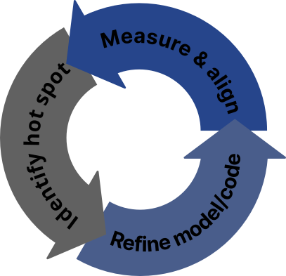
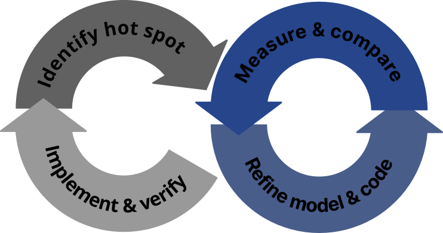
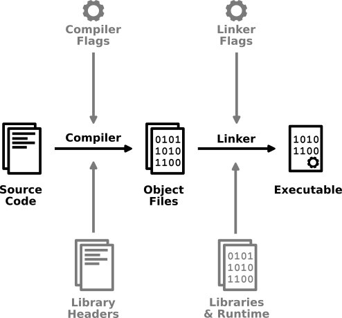
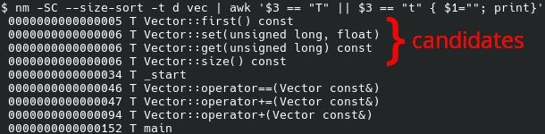

Main Contributors to RAM Consumption
- Global variables (.data & .bss)
- (User) stack (.ustack)
.data is also ROM consumption!
What we’ll be looking at:
- Padding
- Data Sizes
- Virtual Inheritance
- Separation of Concerns
- Stack
ESE Kongress 2025, Sindelfingen
Dr. Steffen Hirschmann
(Slides can be shared
under CC-BY-SA.)
2025-12-01
It’s not rocket science!
Part 1 (why, what, how):
Part 2 & 3: ROM & RAM optimization
Past experience:
Project requires about 100 kB more ROM than available on SoC.
Cost estimated at around 0.00014 €/kB (0.014 cent).
230 million devices => 32,000 €/kB
100 kB => 3.2 mio €.
This cost does not include any complications that adding more memory to a device brings along, like the need for more elaborate packaging and cooling solutions!
IPhone 14: 61 kg CO2e (GWP100)
| % | 1 device | 230 mio. devices | |
|---|---|---|---|
| Production | 79% | 49.4 kg CO2e | 11.4 mio tons CO2e |
| Use | 18% | 11 kg CO2e | 2.52 mio tons CO2e |
230 mio iPhone 14: ~ Slovenia or Estonia


Understand…
| ROM | RAM |
|---|---|
| Read Only Memory | Random Access Memory |
| EEPROM or Flash | DRAM |
Analogy to PCs: ROM = Disk space; RAM = RAM
What do we store there?
Embedded devices may not be able to execute from flash.
Problem: Disparity between C/C++ and ROM / RAM consumption.

Segment headers:
Section headers:
Sections are valuable:
$ readelf -h my_program
ELF Header:
Magic: 7f 45 4c 46 01 01 01 00 [...]
Class: ELF32
Data: 2's complement, little endian
Version: 1 (current)
OS/ABI: UNIX - System V
ABI Version: 0
Type: EXEC (Executable file)
Machine: ARM
Version: 0x1
Entry point address: 0x8125
Start of program headers: 52 (bytes into file)
Start of section headers: 6393040 (bytes into file)
Flags: Version5 EABI, hard-float ABI
[...]$ readelf -l my_program
[...]
Program Headers:
Type Offset VirtAddr PhysAddr FileSiz MemSiz Flg Align
ARM_EXIDX 0x0d9030 0x000d9030 0x000d9030 0x00008 0x00008 R 0x4
LOAD 0x000000 0x00000000 0x00000000 0xd903c 0xd903c R E 0x10000
LOAD 0x0d903c 0x000e903c 0x000e903c 0x0080c 0x3719c RW 0x10000
Section to Segment mapping:
Segment Sections...
00 .ARM.exidx
01 .init .text .fini .rodata .ARM.exidx .eh_frame
02 .init_array .fini_array .data .bss$ readelf -S my_program
[...]
Section Headers:
[Nr] Name Type Addr Off Size ES Flg Lk Inf Al
[...]
[ 2] .text PROGBITS 00008040 008040 012d90 00 AX 0 0 64
[...]
[ 4] .rodata PROGBITS 0001ade0 01ade0 0be250 00 A 0 0 16
[...]
[ 9] .data PROGBITS 000e9048 0d9048 000800 00 WA 0 0 8
[11] .bss NOBITS 000e9850 0d9848 036988 00 WA 0 0 16
[...]
[24] .symtab SYMTAB 00000000 60bfdc 006810 10 25 1133 4
[25] .strtab STRTAB 00000000 6127ec 0063cc 00 0 0 1
[...]Ever encountered this while debugging?
0x00007ffff7fc310e in ?? () from ./liba.so
(gdb) where
#0 0x00007ffff7fc310e in ?? () from ./liba.so
#1 0x00007ffff7fc3156 in func1 () from ./liba.so
#2 0x00005555555551b6 in ?? ()
#3 0x00007ffff7de7083 in __libc_start_main () from /lib/x86_64-linux-gnu/libc.so.6
#4 0x00005555555550ce in ?? ()Symbol tables in ELF (simplified)
Liba.so internals, “a.c”:
static int f2(int i) { ... } // internal linkage
static int f1(int i) { ... } // "
int func1(int i) { ... } // external linkage| .dynsym | .symtab | .debug_* |
|---|---|---|
| func1 | f2 | f2: source, params, types, etc. |
| f1 | f1: dito | |
| f1 | func: dito |
Symbol tables in ELF (simplified)
0x00007ffff7fc310e in ?? () from ./liba.so
(gdb) where
#0 0x00007ffff7fc310e in ?? () from ./liba.so
#1 0x00007ffff7fc3156 in func1 () from ./liba.so
#2 0x00005555555551b6 in ?? ()
#3 0x00007ffff7de7083 in __libc_start_main () from /lib/x86_64-linux-gnu/libc.so.6
#4 0x00005555555550ce in ?? ()Symbol tables in ELF (simplified)
0x00007ffff7fc310e in f1 () from ./liba.so
(gdb) where
#0 0x00007ffff7fc310e in f2 () from ./liba.so
#1 0x00007ffff7fc3156 in func1 () from ./liba.so
#2 0x00005555555551b6 in main ()Symbol tables in ELF (simplified)
0x00007ffff7fc310e in f1 (i=321) at a.c:2
(gdb) where
#0 0x00007ffff7fc310e in f2 (i=12) at a.c:6
#1 0x00007ffff7fc3156 in func1 (i=12) at a.c:18
#2 0x00005555555551b6 in main (argc=2, argv=Ox/fffffffd978) at main.c:7Through understanding the binary (ELF), we can attribute RAM/ROM to binary parts of the binary program.
Be careful: We only measure static consumption (compile-time determined)
You can assess the ROM usage of .o or a .a files
But be careful:
typedef struct
{
Elf64_Word st_name; /* Symbol name (string tbl index) */
unsigned char st_info; /* Symbol type and binding */
unsigned char st_other; /* Symbol visibility */
Elf64_Section st_shndx; /* Section index */
Elf64_Addr st_value; /* Symbol value */
Elf64_Xword st_size; /* Symbol size */
} Elf64_Sym;We can extract this information (if it is available) with tools
nm -Sgfunsize
(Ignore the “candidates” stuff for now).
https://github.com/google/bloaty
--domain vm: runtime RAM/ROM consumption (in contrast
to file size)-s vm sort w.r.t. vm usage-d sections,symbols list sections and for each section
the contained symbols (if you have debug symbols, you can also say
-d compileunits)-n 0 do not truncateIF you have a toolchain that mangles differently, but it comes with a
c++filt equivalent (for GHS: decode):
bloaty <...> | decode
Be careful of alignment in combination with linker reordering (might cause arbitrary, small differences).
Additionally:
No need for debug symbols, because Linker outputs this information besides ELF
gold linker: -MapDrill further down from symbols to its parts
0x0000a54d: DW_TAG_structure_type
DW_AT_byte_size (0x08)
[...]
DW_AT_linkage_name ("2xy")
[...]
0x0000a55b: DW_TAG_member
DW_AT_name ("x")
[...]
DW_AT_type (0x0000098a "int")
DW_AT_data_member_location (0x00)
0x0000a566: DW_TAG_member
DW_AT_name ("y")
[...]
DW_AT_type (0x0000098a "int")
DW_AT_data_member_location (0x04)
0x0000a571: NULLInformation about struct layouts is saved in debug info (e.g. DWARF). Can be viewed with appropriate tools.
dwarfdumppaholegdb: ptype (ptype /o for size
info)Tools:
objdump (-S for source info)gdb: disas (disas /s for
source info)And of course:
Static upper bound:
Dynamic (no upper bound guarantee!):
ASIL toolchains usually come with fixed flags
If you can change them (GNU/Clang):
Assembly allows us to
Let’s say, we are on ARMv7 with FPU. What binary code should this generate?
ROM:
RAM:
Function calls are an abstraction. What’s the abstraction?
Function calls are an abstraction. What’s the abstraction?
(The microarchitectural state of how a caller can be influenced, is potentially large.)
f in assembly?)(Which one is needed per call-site, which one per function definition?)
template <typename T>
struct StrongAlias {
StrongAlias(const T&val);
T& get() const;
private:
T _v;
};
using Meter = StrongAlias<float>;
using Seconds = StrongAlias<float>;
using MeterPerSecond = StrongAlias<float>;
MeterPerSecond calc_speed(Meter distance, Seconds time) {
return MeterPerSecond{distance.get() / time.get()};
}https://godbolt.org/z/e13hrW7jG
template <typename T>
struct StrongAlias {
inline StrongAlias(const T&val): _v(val) {}
inline T& get() const { return _v; }
private:
T _v;
};
using Meter = StrongAlias<float>;
using Seconds = StrongAlias<float>;
using MeterPerSecond = StrongAlias<float>;
MeterPerSecond calc_speed(Meter distance, Seconds time) {
return MeterPerSecond{distance.get() / time.get()};
}Are we done?
calc_speed suffers from the
exact same problem.Myth: “inline is just a hint; the compiler knows best”
Reality: one of the most important things to understand
There are two distinct effects of the inline keyword if it is applied to functions:
Every function must be defined exactly once. Exempt from this rule are templates and inline functions.
– One Definition Rule
Compiler philosophy
| “Don’t inline if not marked as such” | “Inline is automatic” |
|---|---|
| Keyword used for ODR and inlining | Keyword only used for ODR |
Deep call hierarchies might still need manual inlining in either case.
Know the overhead of calling a function.
5 + 3 * NARG Bytes.(Adapt this model as you learn more!)
Get a list of all functions sorted by size.
(Attention: Many architectures need functions to be aligned and atop that many compilers align them additionally for performance reasons. Thus, functions can have trailing padding! The tool you choose should optimally not count these towards the function size.)
Let’s say, we pass integers.
=> Get rid of unused parameters
By reference or by value?
| By value | By reference | |
|---|---|---|
| small | Reg/stack | Move to stack & pass pointer |
| large | Copy to stack & pass pointer | Pointer in reg/stack |
(Assuming small value is in register, large value in memory.)
Vector2d) by value
unless they have a copy constructor
(e.g. std::string).this, large return
valuesWhat’s the codegen of foo?
2 to stack, move literal
1 to stack, pass pointers to addThe misconception “inline increases ROM consumption” can be true!
template <typename T>
struct InterfaceRegistry {
T* m_ptr;
void register_interface(T* ptr) {
m_ptr = ptr;
if (!m_ptr) {
set_error(C_REGISTRY, C_REGISTER_CALL, C_CRITICAL, "ptr is null");
}
}
};
template class InterfaceRegistry<int>;https://godbolt.org/z/jh16s7G66
What to do?
How to detect?
Compilers can do magic if constants are involved
vs.
Fold complete computation at compilation time
vs.
https://godbolt.org/z/fdWYfGfe7
(Also partial compile-time evaluation possible, see e.g. https://godbolt.org/z/fbxsoPnse)
No need for inlining. If all callers pass the same arguments, consider making them constants:
int clamp(int value, int min, int max)
{
if (value >= max)
return max;
else if (value <= min)
return min;
else
return value;
}https://godbolt.org/z/9TxxrWaqK
max != 127 || min != -128max and min as
constantsWhat can a compiler translate this to?
template<typename T, size_t N>
struct Container { T data[N]; };
struct Data { float a{1.4258F}, b{2342.235F}, c{34213.3F}, d{-4.2243F}; };
Container<Data, 100> c{};
Container<Data, 100> foo() { return {}; }Compiler must pick a trade-off (different resources requirements for each variant):
Additionally: Is there function calls (Constructor, memcpy)?
GCC 15.2: https://godbolt.org/z/xPf1Y6vve
TI CL430 21.6.1: https://godbolt.org/z/4r5Mb6M7e
Clang:
template<typename T, size_t N>
struct Container {
T data[N];
size_t argmax; // !
};
struct Data {
float a{1.4258F}, b{2342.235F}, c{34213.3F}, d{-4.2243F};
};
// What does the initialization look like?
Container<Data, 100> c{};
Container<Data, 100> foo() { return {}; }() value initialization / constructor call{} value initialization / constructor call / aggregate
initialization{} is at least zero-initialization (guaranteed). Might
add additional overhead, especially in nested structures!
Especially check these:
struct Data {
Data(); // no longer trivial
float a{1.4258F};
float b{2342.235F};
float c{34213.3F};
float d{-4.2243F};
};Data{} is now a constructor callIf you have nested structures, changing Data alone might
not suffice
template<typename T, size_t N>
struct Container {
Container(): argmax{0} {} // Add that
T data[N];
size_t argmax;
};Container<int, 100> c{}; is no longer initialized
(besides the argmax member).=> Might be issue for projects that use bit-identity comparisons on the whole memory.
struct SensorDetection {
SensorDetection();
SensorDetection(const SensorDetection&);
~SensorDetection();
std::array<float, 3> coordinate;
float signal_strength;
};void sense(SensorDetection& result) {
SensorDetection c, d;
// ...
d = compute();
c = compute_other();
// ...
result = some_condition? d: c;
}Empirical observations:
=> Make structures trivial
No (user provided in both cases)
Rule of 0. Do not define any constructor, destructor, assignment operator, etc.
Compiler behavior varies. Check yours!
Example: linear interpolation between two points
enum class ExtrapolationMode { Zero, Constant, Linear};
float piecewiseInterpolationWithExtrapolation( // existing generic function
float *xs, float *ys, size_t n,
float x,
ExtrapolationMode ep);
struct Point { float x, y; };
float interpolateTwoPoints(Point p0, Point p1, float x) {
float xs[] = {p0.x, p1.x};
float ys[] = {p0.y, p1.y};
return piecewiseInterpolationWithExtrapolation(xs, ys, 2, x,
/* unused */ ExtrapolationMode::Constant);
}Two choices:
How to detect?
void implementation_detail(std::vector<Data>& data);
void function(std::list<Data>& data)
{
// ...
std::vector<Data> vecdata{data.begin(), data.end()};
implementation_detail(vecdata);
// ...
}https://godbolt.org/z/Paf1T1M98
function has to call
implementation_detail to do something, it’s a bug in the
design.This pattern also consumes stack and runtime.
Be careful with templates.
template<typename C>
typename C::value_type best(const C& c) {
typename C::value_type result{};
for (auto&& e : c) {
if (e > result) {
result = e;
}
}
return result;
}
template int best(const std::array<int, 100>&);
template int best(const std::array<int, 200>&);https://gcc.godbolt.org/z/KcrPsear7
How to detect?
best “function”.// actual logic goes here
template<typename It>
auto best(It first, It last) -> typename std::iterator_traits<It>::value_type;
template<typename C>
typename C::value_type best(const C& c) {
// only determines the range, i.e. evaluates the capacity parameter
return best(c.begin(), c.end());
}
template int best(const std::array<int, 100>&);
template int best(const std::array<int, 200>&);.data is also ROM consumption!
What we’ll be looking at:
Blow-up due to multi-dimensional arrays through the type hierarchy.
typedef int32_t Coord1D; // 4 Byte
using Coord4D = std::array<Coord1D, 4>; // 16 Byte
using Polyline = std::array<Coord4D, 256>; // 4096 Byte
struct Truck {
std::array<Polyline, 32> possible_routes; // 130 kB
};
struct TrafficParticipants {
std::array<Truck, 64> trucks; // 8 MB
};// Global variable somewhere:
using CommunicationBuffer = TrafficParticipants;
std::array<CommunicationBuffer, 3> bufferedCommCPU0toCPU2; // 24 MBGeneral rule:
Clear.
Think of the domain of values you want to store and choose an appropriate type.
struct VehicleType {
bool isTruck;
bool isCar;
bool isBike;
bool isPedestrian;
bool isCat;
/* ... */
};Make clear if the domain is a sum or a product.
Get rid of inconsistencies that store information several times
struct Speed {
std::array<float, 3> vector;
float magnitude;
enum direction { FORWARD, BACKWARD, NONE };
};What’s wrong here? How big is this type?
vector
a unit vector?Get rid of inconsistencies that store information several times
What’s wrong here? How big is this type?
isOther == 1 - isTruck - isCar)?Get rid of inconsistencies that store information several times
What’s wrong here? How big is this type?
Get rid of inconsistencies that store information several times
What’s wrong here? How big is this type?
{d, dv, da, dva} are valid
states or only {d, dva}UNKNOWN direction related to
the optionals?Get rid of inconsistencies that store information several times
struct SomeData {
std::optional<T*> t;
};
struct SomeOtherData {
std::optional<std::reference_wrapper<T>> t;
};What’s wrong here? How big is this type?
NULL pointer and empty optional
different states?std::optional is especially vulnerable because it is
easy to overlook. The minimalism problem is not limited to
std::optional!
My guardrail:
std::optional in memory. Use it as
interface type only.std::optional in the same
struct.struct Data {
/* 0x00 */ uint32_t a; // 4 Byte
/* 0x04 -- 4 Byte padding */
/* 0x08 */ uint64_t b; // 8 Byte
/* 0x10 */ uint8_t c; // 1 Byte
/* 0x11 -- 7 Byte padding */
/* 0x18 */ uint64_t d; // 8 Byte
/* 0x20 */ uint8_t e; // 1 Byte
/* 0x21 -- 7 Byte padding */
};
// Total size: 0x28 = 40 Bytestruct Data {
/* 0x00 */ uint64_t b; // 8 Byte
/* 0x08 */ uint64_t d; // 8 Byte
/* 0x10 */ uint32_t a; // 4 Byte
/* 0x14 */ uint8_t c; // 1 Byte
/* 0x15 */ uint8_t e; // 1 Byte
/* 0x16 -- 2 Byte padding */
};
// Total size: 0x18 = 24 ByteRule:
“Do I really need to reorder the attributes? There’s this convenient pragma…”
__attribute__((packed))
struct Data {
uint32_t a;
uint64_t b;
uint8_t c;
uint64_t d;
uint8_t e;
};
uint64_t get_d(Data *d) { return d->d; }https://godbolt.org/z/sx47YTrhK
Unaligned data will either give
Class A's vtbl (.rodata)
+--------------------+
| ... |
+--------------------+ +-----+
Object of type A: | typeinfo ptr | ---> | ... | ---> ...
+-----------+ +--------------------+ +-----+
| vptr | ------------> | ptr to virtual fn1 |
+-----------+ +--------------------+
| member1 | | ptr to virtual fn2 |
+-----------+ +--------------------+
| ... | | ... |
+-----------+ +--------------------+(simplified)
Rules:
struct MyData {
DataClass1 a;
DataClass2 b;
DataClass3 c;
DataClass4 d;
std::array<CommonInterface*, 4> alldata = {&a, &b, &c, &d};
};
// Somewhere in the code:
for (auto& data: alldata)
data->some_function();CommonInterface.struct MyData {
DataClass1 a;
DataClass2 b;
DataClass3 c;
DataClass4 d;
};
// Somewhere in the code:
a.some_function();
b.some_function();
c.some_function();
d.some_function();What memory do we save?
struct MyData {
DataClass1 a; DataClass2 b; DataClass3 c; DataClass4 d;
};
// Somewhere in the code:
a.some_function();
b.some_function();
c.some_function();
d.some_function();MyData because the alignment of a, b, c, d changed.Assume we have this system:
Sensor ---> Preprocessing ---> Perception, etc.
(Core 0) --comm--> (Core 1) --comm--> (Core 2)struct MeasurementData {
std::array<float, 3> xyz;
Matrix<float, 3, 3> covariances;
};
CommBuf<std::array<MeasurementData, 1024>, 3> sensorToPreproc;
CommBuf<std::array<MeasurementData, 1024>, 3> preprocToPerception;Assume:
xyz Sensor ---> Preprocessing ---> Perception, etc.
(Core 0) --comm--> (Core 1) --comm--> (Core 2)struct MeasurementData {
std::array<float, 3> xyz;
Matrix<float, 3, 3> covariances;
};
CommBuf<std::array<MeasurementData, 1024>, 3> sensorToPreproc;
CommBuf<std::array<MeasurementData, 1024>, 3> preprocToPerception;Radar sensor never measures covariances
First communication buffer covariances are unused
Blow up: 4 Byte/float * 1024 * 3 = 12 kB/float
9 floats * 12 kB/float = 104 kB wasted
Radar Sensor ---> Preprocessing ---> Perception, etc.
(Core 0) --comm--> (Core 1) --comm--> (Core 2) Radar Sensor ---> Preprocessing ---> Perception, etc.
(Core 0) --comm--> (Core 1) --comm--> (Core 2)// Preprocessing ---> Perception
struct Meas2 {
std::array<float, 3> xyz;
std::array<float, 3+2+1> covariances;
};struct MeasurementData {
std::array<float, 3> xyz;
// v[0] 0 0
// xyc v[1] 0
// 0 0 v[2]
std::array<float, 3> variances;
float xycovariance;
};Why will that likely not work?
Radar Sensor ---> Preprocessing ---> Perception, etc.
(Core 0) --comm--> (Core 1) --comm--> (Core 2)Somewhere in the communication code, there will be:
CommBuf<std::array<MeasurementData, 1024>, 3> sensorToPreproc;
CommBuf<std::array<MeasurementData, 1024>, 3> preprocToPerception;
memcpy(preprocToPerception[j], sensorToPreproc[i], sizeof(std::array<MeasurementData, 1024>));memcpy reads/writes the complete buffer
although the values are not being used in the actual codeWhat can I do?
https://godbolt.org/z/qeoE95Pcv
Rule:
Trivial things:
&:
void foo(LargeStruct s);for (auto x: list)Afterwards, measure stack consumption during execution and reduce allocation in linker script.
Get right from the start:
Any questions?